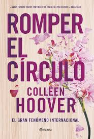
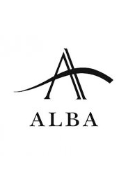

Que es Romper el Circulo?
Romper el Circulo es una biblioteca digital donde encontraras el libro que deseas leer sin pagar una suscripcion o comprar el libro, solamente haciendo una cuenta podras acceder a toda la biblioteca ya sea de manera libre o para la escuela.
Algunos ejemplares que tiene la biblioteca

.jpg)
.jpg)
.jpg)
.jpg)
Por que se llama Romper el Circulo?
se llama Romper el Circulo por la dueña del sitio que le gustaba leer el libro de "Romper el Circulo" de Collen Hoover, al darse cuenta que comprar el libro de manera fisico o digital era muy caro y leer en paginas era muy riesgoso empezo a ser acuerdos con diferentes editoriales para que pudiera publicar los libros de manera gratuita y por eso creo esta biblioteca para toda la gente ya sea el mas pequeño al mas grande pueda leer su libro favorito.
Editoriales asociados y Dueña de la biblioteca

Ventajas de la biblioteca digital para el usuario
La aparición de las bibliotecas digitales proporciona grandes beneficios a la comunidad. Entre los más relevantes, se encuentran los siguientes: Mejoras en el acceso a la información Las bibliotecas digitales son multiplataforma y multidispositivo, proporcionando así un acceso a la lectura y préstamo electrónico flexible. Asimismo, fomenta la creación de comunidades en torno a las bibliotecas sin importar dónde se encuentren físicamente. Proceso de búsqueda eficaz Las bibliotecas digitales suelen tener buscadores potentes que permiten que los usuarios encuentren la información necesaria en el menor tiempo posible. Además, al incluir diversos tipos de filtros, se mejora su precisión. Así, la comunidad tiene la posibilidad de localizar el contenido deseado de forma eficaz. Formatos múltiples Las bibliotecas en línea disponen de múltiples formatos y diversidad de contenidos: audiolibros, libros digitales, vídeos… Esto brinda flexibilidad a la hora de acceder a la información de la manera que mejor se adapte a las preferencias y necesidades de cada usuario.